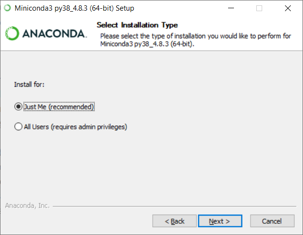
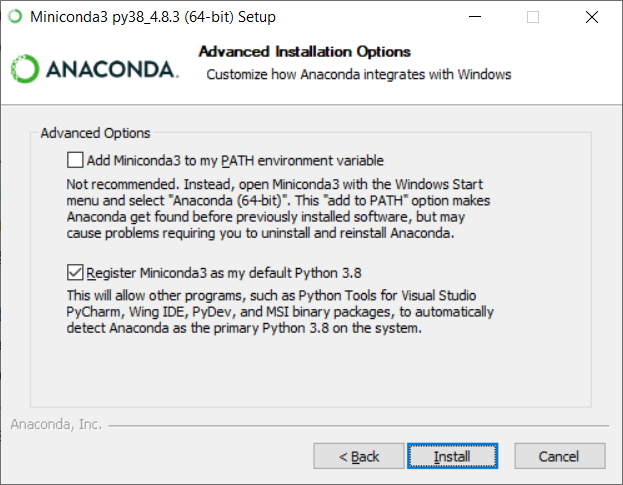
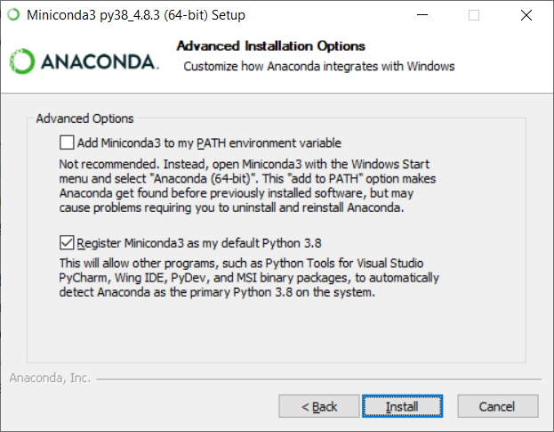

Installationsvejledning¶
Generelt¶
Som grundlag for alt programmel der installeres i forbindelse med FIRE benyttes Conda. Conda er et værktøj der oprindeligt er udviklet til Python-udviklere med henblik på nemt at kunne installere moduler og holde styr på forskellige versioner af samme modul. I dag er Conda et mere generelt værktøj som gør det nemt at installere mange forskellige programmer. Læs mere om Conda her
Installation¶
Der er en række trin der skal gennemføres for at få en komplet installation. Herunder tager vi dem et ad gangen
Git¶
Installer Git fra Software Centeret. Åbn "Software Center" via Startmenuen. Søg efter "git" og installer det.

Oracle Instantclient¶
Installer Oracle instantclient fra Software Centeret. Åben "Software Center" via Startmenuen. Søg efter "Oracle", der dukker flere muligheder op. Den korrekte er "Oracle 12.1.0.1 Client 64bit - Install" (versionsnummeret er muligvis anderledes). Følg instruktionerne på skærmen.

Conda¶
Download og kør Miniconda3-latest-Windows-x86_64.exe.

Installationen er forholdsvis triviel, og man kan trykke "next" i alle trin og slutte af med "install". Det indbefatter at Conda kun installeres til den lokale bruger ("just me") og at ingen af de avancerede muligheder slås til.
{kind=link}
 

{kind=link}
Når Conda er installeret kan du nu i start menuen finde "Anaconda Prompt (miniconda3)" Alle efterfølgende kommandoer i denne installationsvejledning skal afvikles i denne terminal. Det anbefales at lave en genvej til "Anaconda Prompt" i Windows' proceslinjen (åben programmet, højreklik på ikonet i proceslinjen, vælg "fastgør til proceslinje").
FIRE¶
Note
Det er for nuværende mere kompliceret at installere koden end det bliver i fremtiden. Hav tålmodighed, der er smartere løsninger på vej!
Åbn "Anaconda Prompt". Start med at lave en ny mappe til FIRE koden og download den med git
(base) C:\>mkdir FIRE
(base) C:\>cd FIRE
(base) C:\FIRE>git clone https://github.com/Kortforsyningen/FIRE.git .
Cloning into '.'...
remote: Enumerating objects: 4175, done.
remote: Counting objects: 100% (343/343), done.
remote: Compressing objects: 100% (147/147), done.
remote: Total 4175 (delta 208), reused 313 (delta 190), pack-reused 3832
Receiving objects: 100% (4175/4175), 22.54 MiB | 3.66 MiB/s, done.
Resolving deltas: 100% (2512/2512), done.
Note
Bemærk det afsluttende punktum i git clone kommandoen. Det sørger for at din installation placeres i C:\FIRE.
Sørg for at den seneste version af koden bruges:
(base) C:\FIRE>git checkout fire-1.5.0
Initialiser et "conda miljø" til FIRE (vær tålmodig, det kan godt tage lang tid)
(base) C:\FIRE>conda env create --file environment.yml
Collecting package metadata (repodata.json): done
Solving environment: done
Downloading and Extracting Packages
cryptography-3.4.7 | 705 KB | ############################################################################ | 100%
libcurl-7.76.1 | 292 KB | ############################################################################ | 100%
...
coverage-5.5 | 285 KB | ############################################################################ | 100%
libzip-1.7.3 | 134 KB | ############################################################################ | 100%
Preparing transaction: done
Verifying transaction: done
Executing transaction: done
#
# To activate this environment, use
#
# $ conda activate fire
#
# To deactivate an active environment, use
#
# $ conda deactivate
Efter endt installation gør da som conda siger og aktiver dit nye "fire environment"
(base) C:\FIRE>conda activate fire
Note
Bemærk at (base) nu er ændret til (fire) i kommandolineprompten.
Det betyder at dit fire-miljø nu er aktivt.
For at FIRE kan forbinde til databasen er det nødvendigt at tilføje en
konfigurationsfil til systemet hvori adgangsinformation
til databasen er registreret. Placer den i mappen C:\Users\<brugernavn>.
Note
Tag fat i en kollega for at få oplyst brugernavn, adgangskode osv.
Med konfigurationsfilen på plads kan vi nu installere FIRE:
(fire) C:\FIRE>pip install -e .
Obtaining file:///C:/FIRE
Requirement already satisfied: cx_Oracle>=7.0 in c:\users\b012349\appdata\local\continuum\miniconda3\envs\fire\lib\site-packages (from fire==1.0.1) (7.0.0)
Requirement already satisfied: sqlalchemy>=1.2.13 in c:\users\b012349\appdata\local\continuum\miniconda3\envs\fire\lib\site-packages (from fire==1.0.1) (1.2.18)
Requirement already satisfied: click in c:\users\b012349\appdata\local\continuum\miniconda3\envs\fire\lib\site-packages (from fire==1.0.1) (7.1.2)
Collecting click_plugins
Using cached click_plugins-1.1.1-py2.py3-none-any.whl (7.5 kB)
Installing collected packages: click-plugins, fire
Running setup.py develop for fire
Successfully installed click-plugins-1.1.1 fire-1.1.0
Bekræft at installation er gennemført korrekt
(fire) C:\FIRE>fire --version fire, version 1.5.0
Opdater FIRE¶
Ved opdatering til en ny version af FIRE køres følgende kommandoer fra et nyligt åbnet terminalvindue:
(base) C:\>cd C:\FIRE
(base) C:\FIRE>conda activate fire
(fire) C:\FIRE>git fetch origin
(fire) C:\FIRE>git checkout fire-1.5.0
Hvis du vil opdatere til en version med et højere major eller minor-versionsnummer,
altså x'et eller y'et i x.y.z, bør du desuden lave en opdatering af dit conda
miljø:
(fire) C:\FIRE>conda env update --file environment.yml
Måske får du undervejs en advarsel fra conda om at det skal opdateres:
==> WARNING: A newer version of conda exists. <==
current version: 4.5.11
latest version: 4.6.4
Please update conda by running
$ conda update -n base -c defaults conda
Gør som conda foreslår og kør kommandoen conda update -n base -c defaults conda.
Afinstaller FIRE¶
Det kan i visse tilfælde være nødvendigt at afinstallere FIRE. Det gøres i praksis
ved at fjerne condamiljøet fire:
C:\>conda env remove -n fire
Herefter fjernes git repositoriet med FIRE kildekoden:
C:\>rmdir /s C:\FIRE
Flame - QGIS plugin¶
Note
Installationsvejledning til Flame afventer beslutninger om deployment procedurer.